In The Field
Field Programmes Overview
Our students gain hands-on experience across Nigeria's diverse geological terrain from the sedimentary basins of the Niger Delta to the basement complex of the Southwest. Each field trip is designed to reinforce specific geophysical and geological concepts through direct data acquisition and interpretation.
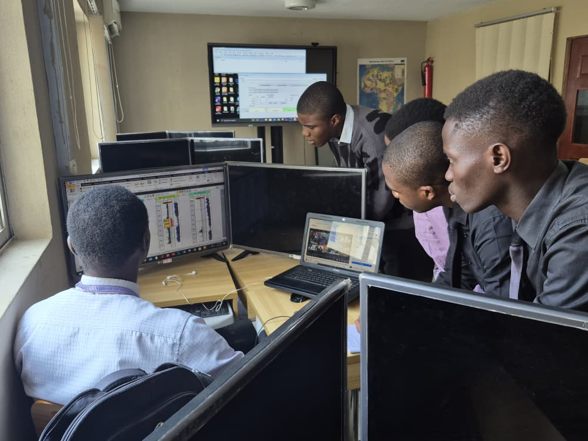
📅 August 2025
Work Station Seismic Data Interpretation Exercise
Students undertook a three-week seismic interpretation exercise for the interpretation of Basin Evaluation Competition [BEC] 2025 competition.
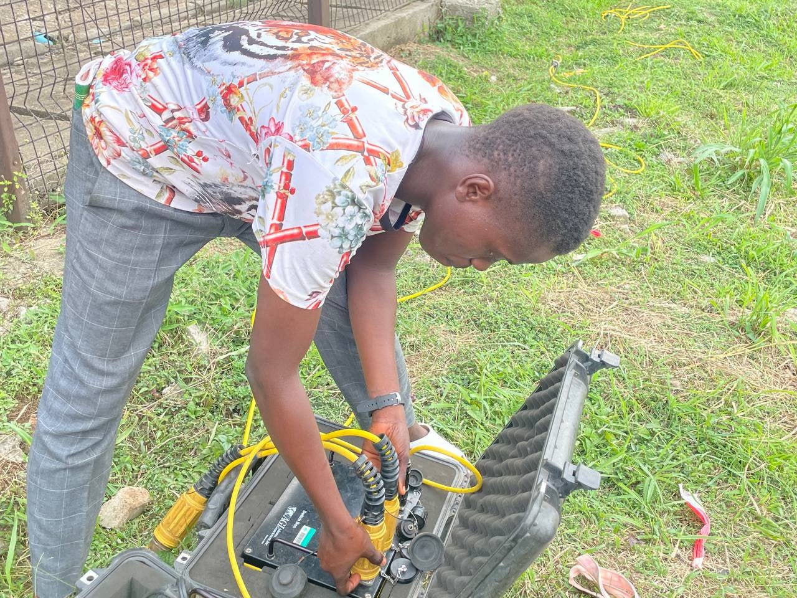
📅 May 2025
Groundwater Prospecting — Dahomey Basin
Students deployed the SuperSting R8 multi-electrode system to run 2D ERT (Electrical Resistivity Tomography) profiles across the Dahomey Basin. The exercise targeted fresh groundwater aquifers and mapped clay/sand alternations at depth.
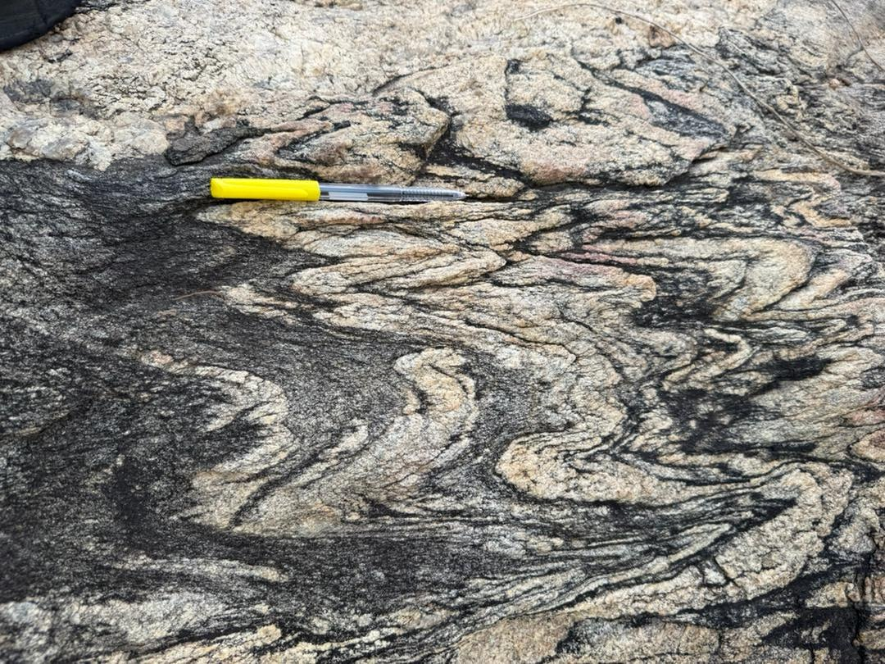
📅 February 2026
Basement Complex Mapping — Ile-Ife
Students conducted structural geological mapping of the Precambrian basement around Ile-Ife. Field tasks included measuring strike and dip of rock units, plotting geological contacts, and identifying migmatites, schists, and granites.
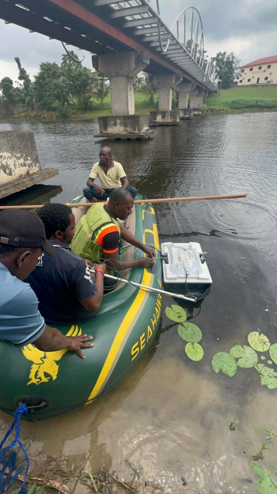
📅 January 2026
Ground Penetrating Radar Survey — Campus Infrastructure
Using the Ground Penetrating Radar (GPR) system on campus, students mapped subsurface utility lines, voids, and soil anomalies. This exercise introduced real-time data acquisition and radargram interpretation.
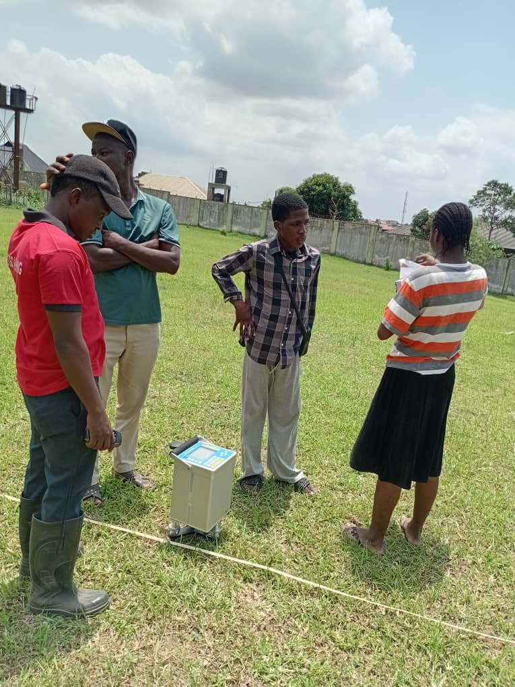
📅 April 2025
Bouguer Anomaly Survey — MTU Permanent Site
Students operated gravimeters and magnetometers along a pre-planned traverse at the permanent site. Base station corrections and terrain corrections were applied to derive Bouguer anomaly maps, highlighting sediment thickness variations.
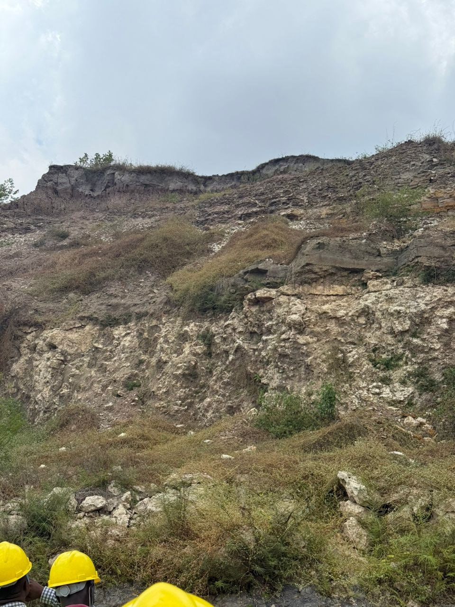
📅 December 2025
Geo-infoTech Workshop — Industry Software Training
Students attended the Geo-infoTech industry workshop where they received hands-on training in Petrel, ArcGIS, and Hampson-Russell. Industry professionals guided sessions on seismic interpretation, well log analysis, and prospect mapping.
Seismic Methods
Seismic Field Activities
Seismic surveys form the backbone of subsurface exploration. Our students learn to set up geophone arrays, generate seismic energy sources, and record waveforms for reflection and refraction analysis, also our students learnt how to interpret SEG-Y data using softwares such as petrel schlumberger software.
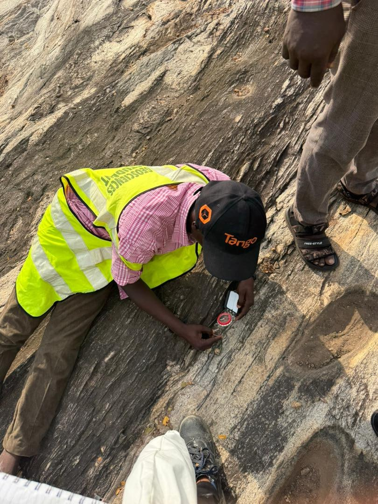
📅 August 2025
Seismic Refraction Exercise
A two-week Seismic Refraction Exercise was conducted for students by the department for training purposes. Teams laid out geophone arrays and used a sledgehammer source to record first arrivals. Results mapped the water table and shallow regolith thickness.
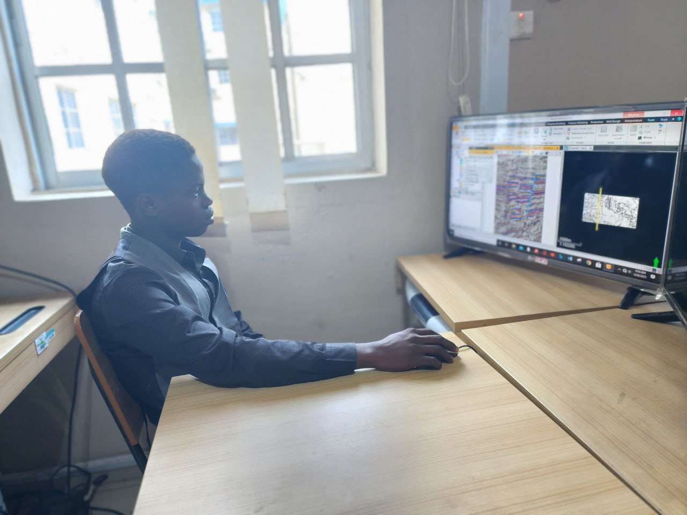
📅 July 2025
Campus Seismic Reflection Practical
An introductory seismic exercise for 300-level students on campus. Gaining intorductory experience on the usage of petrel software.
Gravity & Magnetic Methods
Potential Field Surveys
Students operate gravimeter and magnetometer to map gravity and magnetic susceptibility contrasts in the subsurface, crucial for basin analysis and ground water exploration.
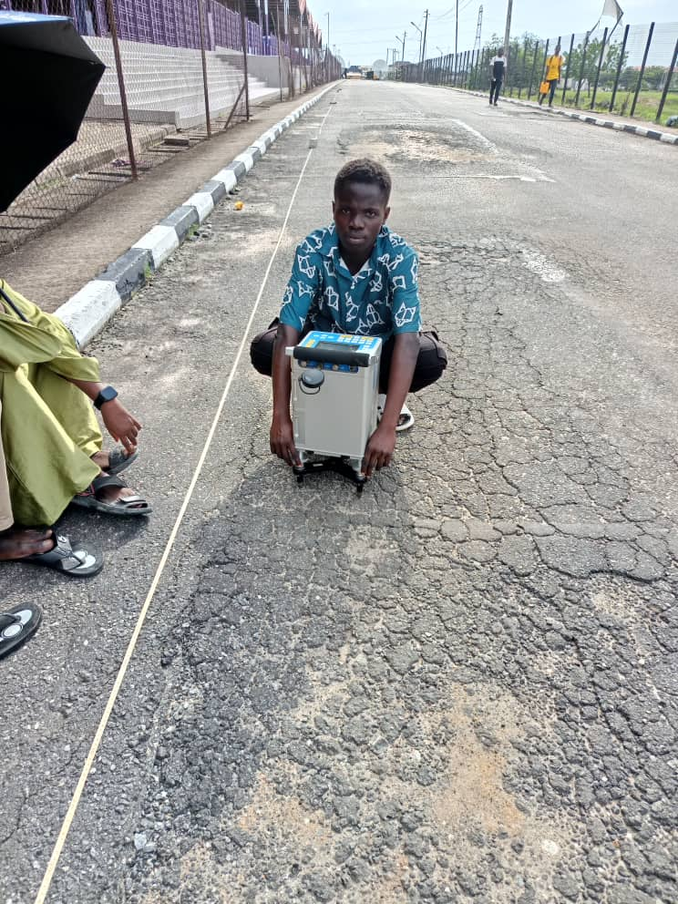
📅 April 2025
Bouguer Anomaly Survey
Students operated CG-5 Scrintex Autograv gravimeter along a 2km traverse, taking station readings every 1m. Tide, drift, free-air, and Bouguer corrections were computed in the lab. Final anomaly maps revealed a sedimentary thickening towards the coast, consistent with the known basin geometry.

📅 April 2025
Magnetic Survery - MTU Permanent Site
Electrical & EM Methods
Resistivity & GPR Surveys
Electrical resistivity and Ground Penetrating Radar (GPR) surveys allow imaging of near-surface conditions — essential for groundwater studies, environmental assessment, and engineering site investigations.
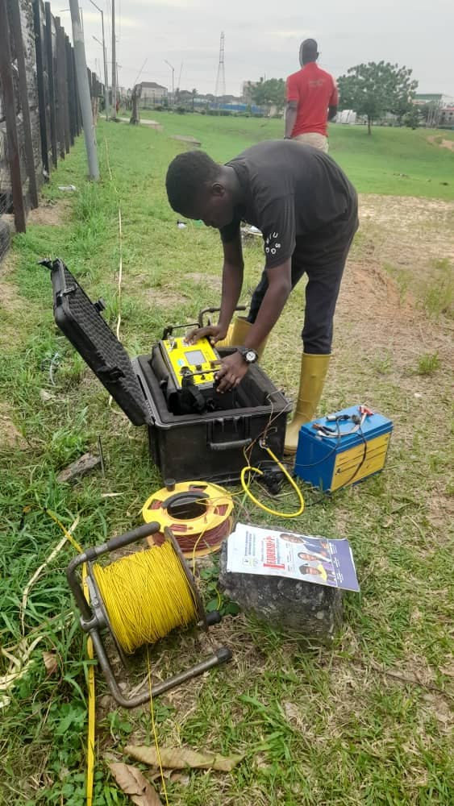
📅 May 2025
2D ERT Groundwater Survey — Ogun Basin
Using the SuperSting R8 multi-electrode resistivity meter, students acquired 2D ERT profiles along three traverses totalling 900m. Wenner and Dipole-Dipole arrays were compared. Inversion with RES2DINV revealed a productive fresh-water aquifer at 15–25m depth, confirmed by a nearby borehole log.
📅 May 2025
Vertical Electrical Sounding — Dahomey Basin
300-level students conducted Schlumberger VES surveys using SUPERSTING R1 at 10 stations to evaluate subsurface layering and aquifer depth in the Dahomey Basin and environs. Sounding curves were interpreted using WINRESIST software.
Geological Mapping
Field Geology Exercises
Understanding the rocks at surface is fundamental to any subsurface interpretation. Students learn to map geological contacts, describe lithologies, measure structural attitudes, and collect samples for petrographic analysis.
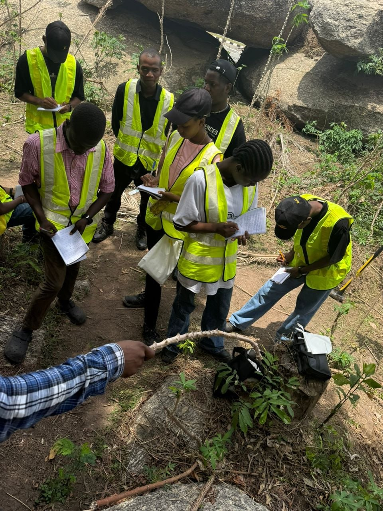
📅 February 2026
Precambrian Basement Mapping — Ile-Ife Area
A five-day mapping exercise targeting the Precambrian basement complex exposed around Ile-Ife. Students mapped migmatites, granite gneisses, and schistose units, measuring structural attitudes (strike, dip, plunge) and plotting geological contacts on 1:25,000 base maps. Rock samples were collected for thin-section petrography and geochemical analysis back in the lab.

📅 October 2025
Sedimentary Log — Abeokuta Formation Outcrops
Students described and logged sedimentary sections exposed in road cuts around Abeokuta. Grain size analysis, sedimentary structures, and palaeocurrent indicators were documented to interpret depositional environments.
Visual Archive
Field Photo Gallery
A visual record of our students at work in the field. Click any photo to enlarge.
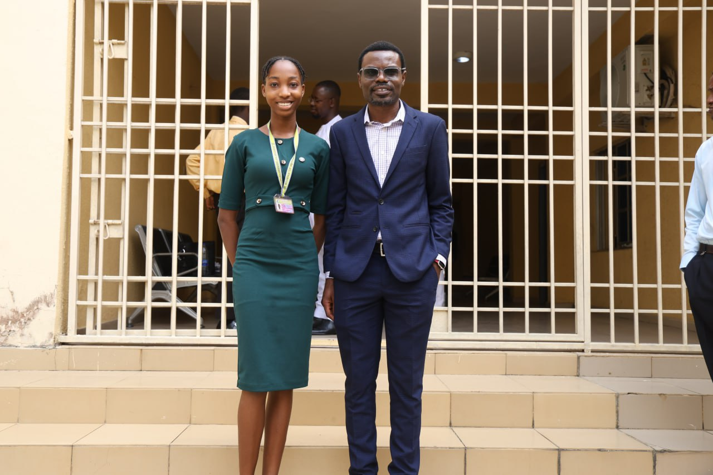